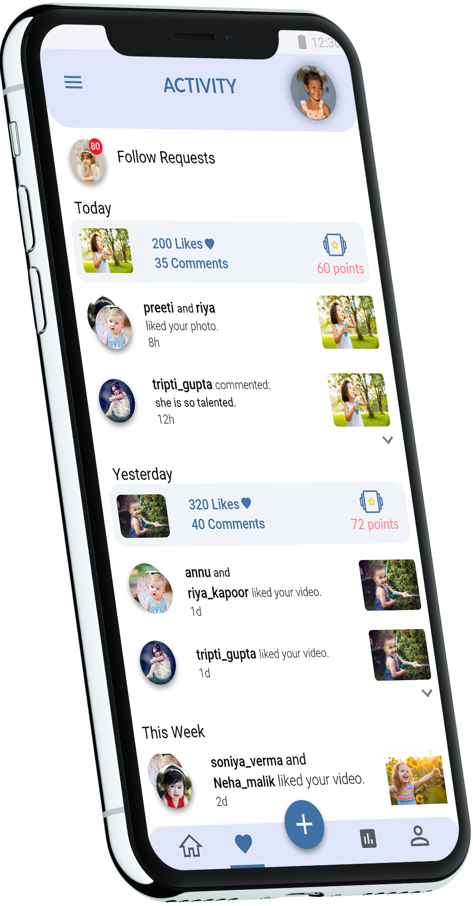

For parents to track their child's progress & help them in deciding their career and goals.
Team : Eleven (Design Club NITJ)
Duration : 2 months
Idea
"How can we help parents to track their child's progress & help them in deciding their career & goals."
App goal
Parent's app is a mobile application designed to improve mental health of millennials & Gen Z.
The app solves the root cause of mental stress in young people as it is found through reserach that one of the biggest causes of stress in youngsters is job dissatisfaction & unemployment due to lacking interest in the field they are working. This problem can be handled by tracking the interests and progress of people, starting right from their childhood by their parents.
Reason
Nowadays Mental Health is in it's worst situation & that's a big thing to worry about. Gen Z (age 15-21) and millennials (age 25-38) are the worst affected. Their lack of concern for health, their social media addictions and lack of sleep worsens the situation.
So this came out to be a topic of interest, and Design club of my college (ELEVEN) decided to work on MENTAL HEALTH to find some solutions that can be helpful to people.
User Research
-
As step one, we decided to know our own stories, to generalize what causes mental stress in a student's life.
-
Then everyone in the group did some personal interviews with their friends and acquaintances who have gone through this problem.
-
We collected data from internet through blogs, articles, youtube videos, etc.
-
Now every team member presented the data collected in square cut out strips (so that it's easy to read ) to be considered for further analysis.
-
In this activity everyone expressed mental health in the form of sketches. This was a fun activity to analyze the thoughts in eveyone's mind regarding the topic -
Music
Loneliness
Hobbies(playing, dancing, etc.)
Sleeping is best way to escape
-
Then different statements were collaborated and put in different categories based on the connections between the statements. Connections are of two types -
Similarity between statements
Difference between statements
Then every collaborartion was explained with a single phrase that totally describes the connection.
Main Problems
- Gen Z are feeling worthless and stressed in this competitive environment.
- Gen Z lack proper career guidance & have little knowledge about their actual interest.
- Many of the millennials are not satisfied with their jobs & are tremendously exhausted with their work.
- Money & responsibilities of family are the primary causes of stress in a millennial's life.
- Even social media addictions affects their state of mind.
- People who are facing mental problems are unwilling to talk about their condition.
Ideation
We took statements of collaboration (affinity mapping) one by one and filled the wall with ideas to solve the problem. Then we put the ideas into various categories to organise them.
Then finally every one picked one idea each from the set of ideas to work further on its designing.
User Persona

Komal
35 years old
House wife
Delhi, India
She is an educated lady & belongs to a middle class family. She is worried about the future of her children.
Issues & problems
- She is facing problems in choosing the career for her children.
- She wants to know about the real talents and interestes of her children.
- She has lack of knowledge of different fields.
Goals
- She wants to know about the talents & interests of her children.
- She wants to keep her children away from stress & mental health issues.
- She wants proper knowledge of fields and different competitions for her children.

Ajay
22 years old
Student
Mumbai, India
Ajay is a final year engineering student. He is worried for his future but has no idea about his interests and talents, he is doing Btech only for his parents' satisfaction.
Issues & problems
- No idea about his talents and interests to pursue further.
- No proper guidance & knowledge of different fields.
- Lack of support from parents to pursue fields other than Btech.
Goals
- To have a career where one enjoys the work.
- To follow dreams & goals fo interest.
- To have proper guidance in professional life
- To lead a healthy lifestyle
User Flow

High-Feadility Prototype
First Screen:
This screen presents the create account feature along with parent and child login.
Create Account

Sign Up


Home
This screen shows the posts (talents, achievements or skills) of kids visible to public giving them the facility to like, comment and share them.
Parents can directly click photos and record videos in the app and post them directly in their timeline.

Dashboard
The dashboard presents the features like chatting, ebooks to read, etc. and also displays the competitions in the locality related to one's personal interests.
Books
Competitions
Messages


Parent Profile
This screen displays the parent's details, his/her children and the subscription he/she has took.
Child's Profile
This shows all the posts of the child with the facility to upload the academic results and timetables also for easy access.


Dashboard
It shows the total likes, comments and points that are further added in the analysis. It even shows all the follow requests.
Progress
It shows the monthly and weekly progress at different skills and also the professions that suit the skills with options to contact professionals in that field for further guidance.